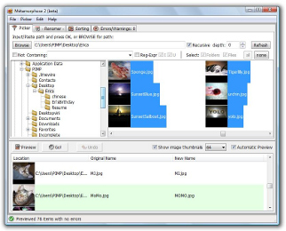

Métamorphose 2 Screenshots
Click on an image to show a larger version of it:
» Windows «
Picker panel, Vista:
Renamer panel, Vista:

Errors panel, Vista:
Sorting panel, Vista
» Linux «
Picker panel, Gnome :
Renaming panel, Gnome :